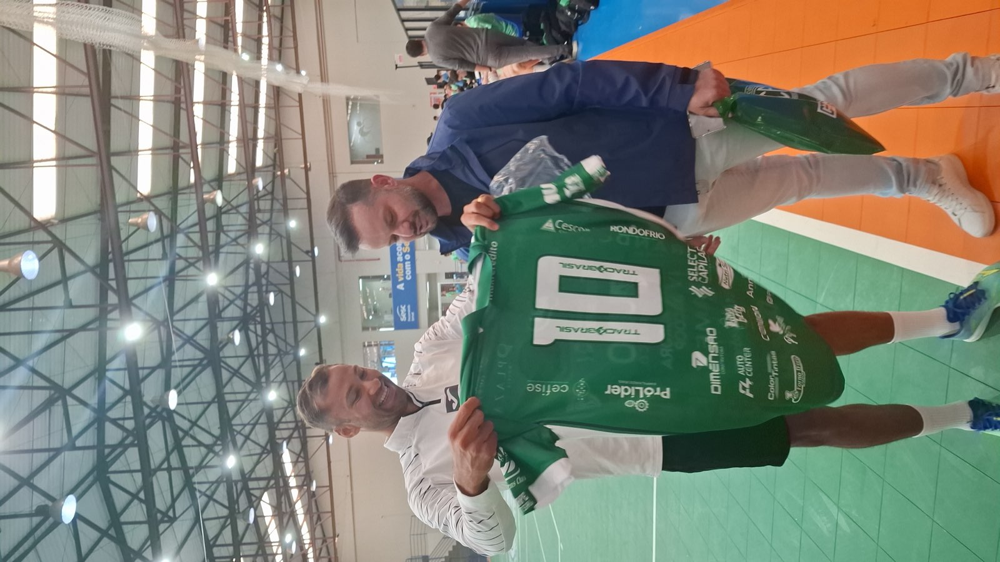
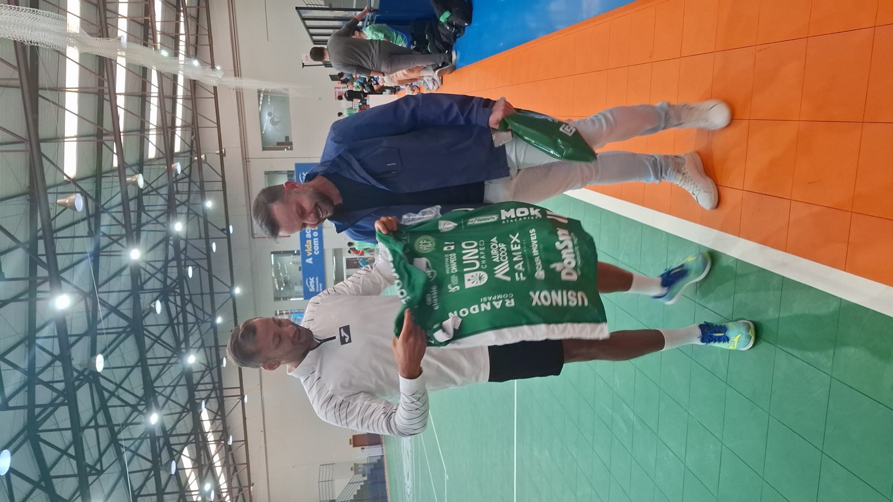

O treinamento da equipe Prefeitura de Chapecó/Chapecoense/Unochapecó, na manhã desta terça-feira (21), contou com uma presença ilustre. O craque Pito esteve no ginásio do SESC e acompanhou de perto a preparação do Verdão das Quadras para o segundo compromisso pelo Campeonato Brasileiro de 2026.

Pivô do Barcelona, da Espanha, Pito nasceu em Chapecó e passa férias na cidade. Ele foi convidado para assistir a um treino da Chape Futsal a convite do goleiro Alê Falcone – os dois atuaram juntos na ACBF (RS). Durante a visita, o presidente do clube, Clayton Tressoldi, e o vice, Ivanor de Lima Pinto, entregaram uma camisa oficial do time verde-branco.

“Muito feliz. O Alê me convidou. Jogamos juntos em Carlos Barbosa e hoje ele está em Chapecó. Esse projeto (da Chapecoense Futsal) já tem dois anos, estou acompanhando. Chapecó merece ter futsal forte, tantos atletas que saíram daqui. É um projeto que precisa seguir, porque tem tudo para dar certo”, disse Pito.
“Para nós é uma alegria recebê-lo. Chapecó é um celeiro de atletas, mas infelizmente a maioria teve de sair. Hoje, temos um projeto que está se consolidando e a nossa expectativa é que a gente consiga segurar os nossos craques. Chapecó voltou ao cenário nacional para ficar”, disse Clayton Tressoldi.
Aos 34 anos, Pito defende o Barcelona, da Espanha. O pivô foi eleito o melhor jogador de futsal do planeta da temporada de 2023 e se sagrou campeão da Copa do Mundo pela seleção brasileira em 2024.
Próximo jogo
A Prefeitura de Chapecó/Chapecoense/Unochapecó vive uma semana importante. Nesta sexta-feira (24), o time do técnico Leo Schroeder enfrenta o São João do Jaguaribe (CE), às 19h15, no SESC Chapecó. A partida vale pela segunda rodada do Brasileiro. Na estreia, o Verdão das Quadras venceu o Criciúma por 3 a 0, em casa.
Crédito das fotos: Chape Futsal